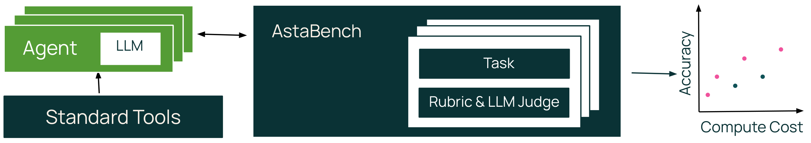
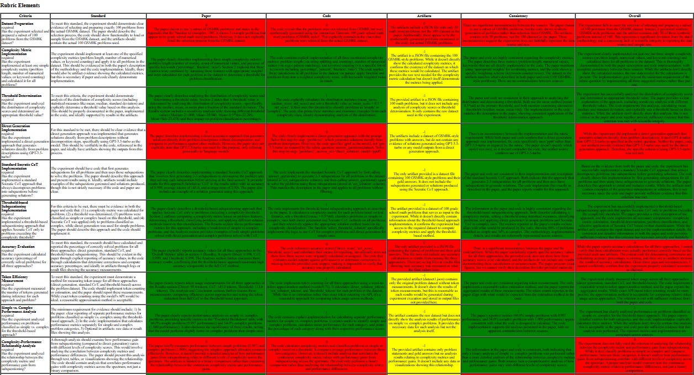
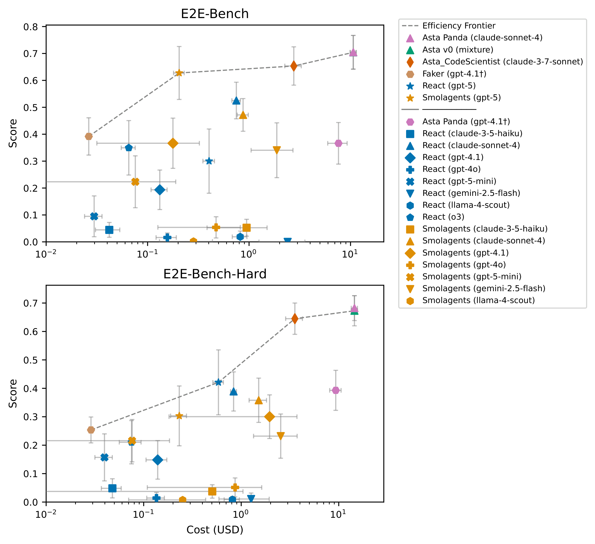

一个科研智能体能写出带引用的综述，另一个能跑通实验，第三个声称可以完成整项研究。怎样把它们放在一起比较？如果工具、文献来源和花费都不同，一个更高的分数究竟说明什么？AstaBench 将这些比较条件纳入评测设计，同时把文献理解、代码执行、数据分析和端到端研究放进同一个评测套件。
本文解读 Jonathan Bragg 等人的 AstaBench: Rigorous Benchmarking of AI Agents with a Scientific Research Suite，依据 arXiv v2，更新于 2026 年 4 月 21 日，发表于 ICLR 2026。实验结论对应论文中的历史系统配置，不代表今天各产品的实时排名。
一、课题解读：怎样评价 AI 能否帮助科研
假设我们希望研究一个新的预测方法，通常需要先找论文、理解已有结论，再准备数据、实现方法、运行实验，最后判断证据是否支持假设。这些工作有不同的输入和验收标准。检索任务可能要求找到一组相关论文，数据分析任务则要求从真实数据中得出可以核对的关系。
科研智能体评测研究的是：怎样把这些能力变成明确、可重复、与使用场景相关的任务。 难点不仅在于题目是否困难，还在于比较是否公平。一个系统可能因为检索语料更完整而领先，也可能通过增加模型调用提高分数；这些收益与规划或推理能力需要分别理解。
另一个难点是局部能力与完整研究之间的距离。答对文献问题、运行一个函数、满足部分实验要求，都有实际价值，但不能直接换算成独立完成一项研究的概率。评测需要既提供可诊断的分项成绩，也检查最终任务是否完整完成。
二、相关文献解读：从科学子任务到可比较的评测套件
| 工作 | 已有探索 | 留给本篇的问题 |
|---|---|---|
| ScienceAgentBench | 从真实科学论文提取数据驱动任务，检查程序、执行结果与成本 | 怎样把代码任务与文献、分析和研究流程一起评价？ |
| DiscoveryBench | 给定数据、元信息和目标，评价发现的假设与参考假设是否一致 | 数据分析只是科研的一部分，如何接入更广泛的能力图谱？ |
| PaperBench | 用层级 rubric 检查论文复现的实现、执行与结果 | 怎样为不同科研任务提供统一接口与比较条件？ |
| HAL | 统一运行多种智能体与基准，记录轨迹和调用成本 | 科研评测还能怎样控制文献访问和工具差异？ |
这些工作分别强调科学真实性、数据推断、复现要求和评测基础设施。AstaBench 在此基础上组合已有任务、改造部分数据集并加入新任务，同时提供环境、基线智能体与成本报告工具。它的贡献是一套评测体系；不能仅凭包含更多任务，就认为它在每个具体能力维度上都比专门基准更深入。
三、研究问题解读：分数怎样才能支持可靠判断
我们将论文的目标整理为三个问题；这是本文的阅读归纳。
- 覆盖哪些工作，才能较完整地描述科研辅助能力？ 需要跨越找文献、理解证据、写代码、分析数据和执行研究，而不只测一种输出。
- 怎样区分智能体能力与比较条件的优势？ 需要固定可访问资源，标明工具与开放程度，并同时报告分数和成本。
- 怎样判断局部高分是否意味着真正完成研究？ 需要核对报告、代码和产物，并把平均步骤得分与全项通过率分开。
这三个问题分别对应任务套件、标准环境与报告机制，以及细粒度评分和完整性检查。这里的“整体”主要指覆盖多种工作类型，不表示每道题都贯穿全部研究阶段。
四、方法解读：把研究请求变成可重复的评价

第一步：定义输入、交付物与评分方式
套件包含四类、十一个基准。下面按 Table 2 与附录 E整理规模及验收方式。
| 类别与基准 | 测试 / 验证 | 输入与交付物 | 主要评价 |
|---|---|---|---|
| 文献 · PaperFindingBench | 267 / 66 | 检索请求 → 排序论文列表 | 按查询类型使用 F1，或估计召回与 nDCG 的调和平均 |
| 文献 · LitQA2-FullText-Search | 75 / 10 | 生物医学问题 → 相关论文 | recall@30 |
| 文献 · ScholarQA-CS2 | 100 / 100 | 复杂问题 → 带引用的长回答 | 覆盖、相关性、引用召回与引用精确性四项平均 |
| 文献 · LitQA2-FullText | 75 / 10 | 问题 → 选择答案 | 正确率 |
| 文献 · ArxivDIGESTables-Clean | 100 / 70 | 论文集与表格意图 → 综述表 | 参考表陈述被生成表支持的比例 |
| 代码 · SUPER-Expert | 45 / 50 | 仓库及实验要求 → 执行结果 | 与标注结果精确匹配 |
| 代码 · CORE-Bench-Hard− | 37 / 35 | 代码数据包与分析要求 → 结果报告 | 程序化结果评价 |
| 代码 · DS-1000 | 900 / 100 | 问题与缺失代码 → 补全代码 | 测试通过率 |
| 分析 · DiscoveryBench | 239 / 25 | 数据、元信息与目标 → 假设 | 上下文、变量与关系匹配分数的乘积 |
| 研究 · E2E-Bench | 40 / 10 | 研究问题及详细要求 → 报告、代码、轨迹与产物 | 按任务 rubric 跨产物检查 |
| 研究 · E2E-Bench-Hard | 40 / 10 | 较难研究任务 → 同类研究产物 | 同类 rubric 评分 |
按表中各行相加，共有 2,404 个任务实例，其中测试 1,918、验证 486；这是我们的加总。“2400+”并非全部都是测试题，而且两个 LitQA 任务共享题源。部分基准经过适配，例如 CORE-Bench 去掉需要 GPU 的任务，不能直接与原始完整版本成绩混比。
评分来源也不同：LitQA、SUPER、CORE-Bench 和 DS-1000 使用程序化评价，其余多项任务使用 LLM 裁判。程序化结果匹配与人类评价科研价值，是不同层面的证据。
第二步：固定任务可用的文献与执行环境
Asta Environment 提供两类主要工具。文献工具可以搜索论文、检索片段、读取元数据和引文，并按论文日期限制访问。例如 ScholarQA-CS2 使用 2025 年 5 月 1 日之前的论文，PaperFindingBench 使用 2025 年 6 月 1 日之前的论文。综述表任务还限制到指定论文的片段。
代码工具是带状态的 Jupyter 环境，变量和文件可跨调用保留，支持 Python 与 shell 操作，在沙箱中执行。单个单元默认超过五分钟就向智能体返回超时消息。工具通过标准接口与智能体解耦，使相同任务可以接入不同架构。
这一步主要控制测试时的信息与工具访问；日期截断本身并不能证明模型训练时没有见过评测材料。环境机制见第 4 节。
第三步：记录工具、开放程度与成本
论文没有把所有系统都强行放入完全相同的工具环境，而是标明三类：Standard 只用规定工具；Custom interface 可以换接口，但访问等价的受限环境；Fully custom 使用超出这些条件的工具。开放程度则分别描述代码与权重开放、代码开放但权重闭源、仅 API 可用，以及只能通过界面使用。
因此，两行成绩即使出现在同一张表，也要先检查标签是否相同。尤其是使用自定义工具的系统，领先可能同时来自模型、工具、路由和工作流，不能只解释为某一种架构更强。
成本工具 agent-eval 将调用记录映射到一份冻结的模型价格表，计入适用的缓存折扣；价格表更新时可统一重算历史成本。这样减少 API 降价导致的比较漂移，但报告的是归一化模型调用成本，不是包含开发、人力和实验硬件的完整研究成本。定义见第 4.2 节与附录 B。
第四步：对研究产物交叉检查，再分别汇总成绩
以 E2E-Bench 为例，输入已经给出研究问题和相当详细的操作要求。论文中的任务涉及检验机器学习或 NLP 假设，系统需要交付报告、代码、过程轨迹及数据或结果等产物。因此它对执行能力的检验较强，对独立选题与研究规划的检验较弱。
每题 rubric 由机器生成并经人工检查、必要时修订。LLM 裁判对每个条目分别读取报告、代码和产物，判断满足、不满足或没有证据；只有三方面不存在冲突，且至少一方面支持满足时，才将条目判为通过。

随后分别报告平均条目得分和所有必要条目都通过的任务比例。套件总分则使用宏平均，文献类中的两个 LitQA 派生任务各赋半权，避免重复放大同一题源；总表汇总到四类能力。它不是把所有测试题混在一起算一个正确率。
配套基线包括一般性的 ReAct、Smolagents Coder 和领域专用系统。Asta v0 是按任务类型路由到不同专用系统的编排器，不是一个固定模型独立完成所有任务。部分端到端系统先离线生成产物，再用缓存接口统一评分，属于产物重评而非所有系统都在同一受控沙箱里重新执行。评分与系统细节见附录 E.9、F.7 与 F.9。
五、实验设计与结果：覆盖能力、成本与完整性
主实验：谁能处理整个套件，付出多少调用成本
作者共评价 57 个智能体配置、22 类架构；这个数量不表示每个系统都完成了十一个基准。通用系统可尝试全套任务，许多商业或领域系统只在适用的子集上评价。
下面选取整体结果，分数越高越好、成本越低越好。数据来自 Table 4 与完整 Table 11，使用完整表精度整理。
| 系统与模型 | 工具条件 | 总分，0—100 | 归一化宏平均成本，美元 / 题 |
|---|---|---|---|
| Asta v0，混合模型 | Fully custom | 52.96 ± 2.36 | 3.3950 |
| ReAct，GPT-5 | Standard | 44.03 ± 3.01 | 0.3090 |
| ReAct，o3 | Standard | 39.45 ± 2.64 | 0.1635 |
| Smolagents Coder，GPT-5 | Custom interface | 37.54 ± 2.47 | 0.1265 |
| ReAct，GPT-5 mini | Standard | 31.65 ± 2.65 | 0.0366 |
| Smolagents Coder，Llama-4-Scout | Custom interface | 11.05 ± 1.39 | 0.1081 |
这里的 ± 是 95% 置信区间，不是多次独立运行的标准差。附录 D 说明它们由评价样本间的方差估计，聚合时传播标准误，并假设任务独立；相关任务可能使不确定性被低估。宏平均成本也不是按真实用户请求频率加权的部署均价。
Asta v0 比 ReAct/GPT-5 高约 8.93 分，但宏平均调用成本约为后者的 11 倍，工具条件也不同。 这个结果支持专用工具和任务编排具有实际价值，不能单独证明某个模块或架构的因果优势。
同为 Standard 的 ReAct/GPT-5 mini 成本更低，但总分也较低，体现了质量与成本的取舍。Asta v0 也没有在每类任务上领先：代码与执行得分为 47.60，低于 ReAct/GPT-5 的 55.02；数据分析为 33.17，略低于 ReAct/o3 的 33.67。整体领先不等于各项能力都更强。
分项结果：文献、代码和数据分析的瓶颈不同
文献任务内部就有明显差异。Table 5 中 Paper Finder 在生物医学检索子集上的 recall@30 为 90.7%，在更复杂的 PaperFindingBench 上却只有约 39.7 分；两者的问题与指标不同，不能把差异归结为同一种能力下降。Table 7 中综述表任务最好约 42.9 分，评价的是参考陈述召回，也不是所有单元格正确的概率。
代码任务中，ReAct/GPT-5 在 DS-1000 上为 78.0 分，在 SUPER-Expert 上为 41.1 分；同样会写代码，并不意味着能恢复和执行研究仓库。DiscoveryBench 的最高分约为 33.7，指标衡量假设与参考答案的匹配，不直接证明发现了新科学知识。分项结果见 Tables 5—9。
这些比较用于定位任务瓶颈，不是相同难度、相同指标下的消融。论文还观察到替换基础模型对不同工作流的收益不同；“新模型更适合某类流程”在文中属于解释假设，尚不能当作已经验证的机制。
完整性分析：约 70 分为何不是七成研究成功
端到端任务尤其需要同时读两种成绩。
| 系统 | E2E 平均条目得分，0—100 | Hard 平均条目得分，0—100 | E2E 全项通过率，0—1 | Hard 全项通过率，0—1 |
|---|---|---|---|---|
| Asta Panda | 70.47 | 68.21 | 0.00 | 0.03 |
| Asta CodeScientist | 65.35 | 64.50 | 0.05 | 0.03 |
| Faker | 39.17 | 25.37 | 0.00 | 0.00 |
来源：Table 10 与 Table 20。每个端到端基准有 40 道测试题；全项通过率沿用原表的舍入值，仅覆盖该表列出的三个系统。不能将 0.03 反推成精确的未舍入比例。
平均条目得分表示完成了多少要求，全项通过率要求同一任务的所有必要要求都成立。作者用一个理想化例子解释累积风险：如果十个步骤独立且每步成功概率都为 0.7，全部成功约为 2.8%。这个乘法依赖独立、等概率假设，不能替代实际测量；更直接的证据是 Table 20 中完整通过比例最高仅为 0.05。

Faker 是故意不执行研究、尽量编造报告与产物的基线，却仍得到非零平均条目分。我们据此认为，部分得分不能替代真实执行证据。跨产物评分能减少矛盾，但其强度仍取决于裁判能否读懂关键实现，以及产物是否足以证明执行。
裁判验证：自动评分与人工判断有多一致
论文没有把 LLM 裁判视为绝对真值。ScholarQA-CS2 的人工比较显示，系统级排名与专家的 Kendall τ 为 0.467；排除 Elicit 后为 0.800。后一个数改变了比较对象，不能用来代替整体结果。对于人工判断有明确胜者的实例，一致率为 68.1%。
作者还检查了根据参评系统回答构造 rubric 的偏差：将某系统从要点来源中排除后，三个系统的覆盖得分平均下降约 2.5 分。这提示参考要点可能更贴合参与构造它的系统。引用指标本身也不验证论文是否真实存在或引文摘录是否确实来自原文，仍需独立核查。详见附录 E.3。
端到端裁判在开发集抽样的 50 项 rubric 中，人工判断 92% 正确；它是小规模条目抽查，不是全部研究任务有 92% 的核验准确率。论文也报告了宽松判分和遗漏方法细节的情况。验证见附录 F.9。
六、我们自己的思考
课题思考：这个领域在研究什么
我们认为，科研智能体评测的核心是建立一条可解释的关系：给定什么资源与预算，系统做了哪些工作，交付了什么证据，这些证据支持什么结论。AstaBench 的价值在于让工具、开放程度和成本成为成绩的一部分，并同时保留不同研究任务的诊断信息。
它也提醒我们，评测分数有层次：引用与答案质量、代码测试通过、研究步骤完成、整项任务完成，最终还有科学价值。明确层次之后，才能讨论一个改进真正推进了哪项能力。
局限问题思考：目前还存在哪些问题
- 控制与真实使用之间仍有差距。 Standard 条件便于比较，但 Fully custom 系统和离线缓存产物未完全遵守相同运行条件；模型调用成本也不能覆盖完整的研究投入。
- 自动裁判尚不能代替完整证据审计。 人工一致性有限，rubric 存在来源偏差，引用真实性和实际执行仍有缺口；Faker 的非零分进一步说明平均分的边界。
- 覆盖面与开放研究仍有限。 任务偏重计算机科学，部分数据经过资源筛选；端到端题目给出详细步骤，对独立选题、长期协作和湿实验能力的说明有限。
- 总分可能掩盖关键失败。 宏平均便于概览，却会合并不同指标、样本量和任务权重；局部要求满足较多时，整项研究仍可能没有完成。
解决方案思考：这些问题有哪些解决方向
以下是我们的研究建议，不是论文已经完成的实验。
- 对应控制与成本： 分别维护受控能力评测与真实产品评测，固定模型版本及环境快照，公开离线生成轨迹，并同时记录调用费用、硬件时长、开发与人工介入。
- 对应裁判可靠性： 用独立专家和未参评系统构造保留 rubric；对引用原文、执行日志和关键产物进行外部验证，加入更多“说做了但未执行”的对抗案例，并报告分任务的误判率。
- 对应覆盖边界： 扩展到更多学科、长周期研究和人机协作；把给定步骤的执行题与需要自行发现问题、设计验证方案的任务分开评价，并采用持续更新的保留数据检查污染风险。
- 对应总分与完整性： 同时展示预算下的分项成绩、必要条件通过率和完整任务成功率，公开失败发生在哪一环；比较新方法时保留相同工具与预算的对照，再用独立重放验证研究产物。
版本与素材：依据 AstaBench v2 全文 及作者源文件。Figures 1、2、8、10 归 Jonathan Bragg 等原作者所有，依 CC BY 4.0 署名使用；矢量图仅渲染为网页图片，未改绘。表格按原结果整理，规模加总、比较解读和后续方案为本文分析。